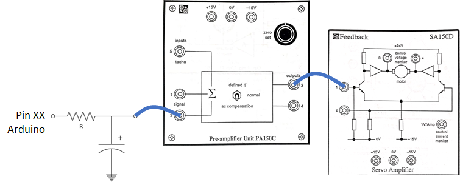

Data: 10/11/2022, 14/11/2022, 15/11/2022, 16/11/2022.
Ideia: gerar uma onda senoidal de 40 Hz, usando saída PWM filtrada do Arduino.
Detalhes: placas Arduíno não possuem conversores D/A, então a ideia é filtrar alguma saída PWM do Arduíno.
A ideia aqui é gerar um nível DC para atuar como sinal atuador de controle para o kit da Feedback. Temos que disponibilizar uma tensão DC variando entre 0 até 5 Volts numa das entradas do módulo Servo Amplificador (SA150D). Eventualmente (para atuar como um seguidor de tensão), podemos usar o módulo pré-amplificador (PA150C) para a partir deste, injetar o sinal de controle no módulo Servo Amplificador. Algo semelhante ao ilustrado na próxima figura:

Supondo que vamos gerar a onda senoidal na faixa dos 40 Hz, uma boa frequência de corte para o filtro passa-baixas aqui seria a partir dos 400 Hz.
É bom lembrar que o sinal PWM gerado por “default” pelo Arduíno, parece:
delay() e millis() — ver “Arduino Analog Output:Impossible Analog; using Digital Pins. How to generate an Analog Output varying from 0V to 5V using only Digital pins!” (acessado em 03/11/2022)A tabela a seguir detalha melhor que temporizadores do Arduíno trabalham com que pino para gerar sinal PWM:
| Pinos Arduíno (PWM) | Timmer | Registrador | Frequência |
|---|---|---|---|
| 3 | Timer2 | OC2B | 490 Hz |
| 5 | Timer0 | OC0B | 980 Hz |
| 6 | Timer0 | OC0A | 980 Hz |
| 9 | Timer1 | OC1A | 490 Hz |
| 10 | Timer1 | OC1B | 490 Hz |
| 11 | Timer2 | OC2A | 490 Hz |
Note que:
É melhor sempre optar pela frequência mais elevada possível para o gerador PWM. Neste caso, seria 980 HZ, encontrada apenas nos pino 5 e 6 do Arduíno. Neste caso, vamos optar por usar o pino 5.
Cuidados: o próprio site do Arduino alerta para o fato de que os pinos 5 e 6 usam o Timer0 (frequencia mais alta) mas como este timer também é compartilhado com as funções millis() e delay(), o usuário DEVE esperar valores mais elevados que o solicitado se insistir em usar estas últimas funções. Este problema é mais comum acontecer para baixos valores de duty-cycle. Esperamos que isto não ocorra no nosso caso.
Considerando que vamos trabalhar com o pino 5 (
A frequência de corte do FPB é definida como:
Usando R = 10 K
>> R=10E3;
>> fc=98;
>> C=1/(2*pi*R*fc)
C =
1.624e-07
Iso resulta num capacitor de
>> fc=1/(2*pi*10E3*C)
fc =
106.1
>> C=220E-9;
>> fc=1/(2*pi*10E3*C)
fc =
72.343
Supondo que queremos gerar uma senoide de 40 Hz, seria adequado amostrá-la ou gerar um sinal à 400 Hz, o que rende 10 pontos por ciclo da senoide e resulta em algo como:
>> fsinal=40;
>> Tsinal=1/fsinal;
>> fs=400;
>> Ts=1/fs; % freq de amostragem adotada
>> t=0:Ts:2*Tsinal; % gerando vetor tempo para 2 ciclos da senoide de 40 Hz
>> yd=sin(2*pi*fsinal*t);
>> t(length(t)) % valor final da var tempo findo os 2 períodos da senoide
ans =
0.05
>> figure;
>> ezplot('sin(2*pi*40*x)',[0 0.05])
>> hold on
>> plot(t,yd,'o-')
>> legend('senoide desejada', 'senoide sintetizada')
>> grid
Gráfico da senoide de 40 Hz amostrada à 400 Hz:
Detalhe: no momento de codificar no Arduíno, esta onda senoidal deverá oscilar entre os valores 0 à 255 (tipo de dado int). Então, modificamos a rotina no Matlab para gerar a senóide nesta faixa de valores:
>> fsinal=40;
>> Tsinal=1/fsinal;
>> fs=400;
>> Ts=1/fs % freq de amostragem adotada
>> t=0:Ts:2*Tsinal; % gerando vetor tempo para 2 ciclos da senoide de 40 Hz
>> 256/2
ans =
128
>> yd=128+128*sin(2*pi*fsinal*t);
>> t(length(t)) % valor final da var tempo findo os 2 períodos da senoide
ans =
0.05
>> figure;
>> ezplot('128+128*sin(2*pi*40*x)',[0 0.05])
>> hold on
>> plot(t,yd,'o-')
>> legend('senoide desejada', 'senoide sintetizada')
>> grid
Então a equação final da senoide a ser implementada no Arduíno na rotina ISR é:
Note mais especificamente, que os primeiros 10 valores são repetidos de forma periódica e são:
>> [t(1:12)' yd(1:12)']
ans =
0 128
0.0025 203.24
0.005 249.74
0.0075 249.74
0.01 203.24
0.0125 128
0.015 52.763
0.0175 6.2648
0.02 6.2648
0.0225 52.763
0.025 128
0.0275 203.24
Outro detalhe: não podemos, dentro da rotina ISR para executar a eq. (1), usar alguma variável t porque fatalmente atingiríamos o limite (scopo) desta variável. A opção seria usar uma variável do tipo t e da mesma forma, o limite da variável seria atingido. Uma opçao mais fácil e certeira nesta caso é, ao invés de passar como argumento de entrada, a variável
>> delta_theta=2*pi/10 % ciclo completo da senoide dividido em 10 pontos
delta_theta =
0.62832
>> theta=0:delta_theta:2*pi;
>> theta'
ans =
0
0.62832
1.2566
1.885
2.5133
3.1416
3.7699
4.3982
5.0265
5.6549
6.2832
>> 2*pi
ans =
6.2832
>>
Note que o último valor de vetor acima, repete o primeira amostra (posição zero do vetor theta).
Podemos aproveitar e gerar um vetor no Matlab (que pode ser incorporado no código do Arduíno) com os 10 valores que devem ser gerados (o ciclo completo da senoide) a cada intervalo de tempo ou intervalo angular. Aproveitando os cálculos já gerados anteriormente (que estão no workspace do Matlab), seria algo como:
>> index=0:10;
>> escala=100/256
escala =
0.39063
>> yd_per=yd*escala; % valor duty-cycle de saída em %
>> [index(1:11)' t(1:11)' theta(1:11)' yd(1:11)' yd_per(1:11)']
ans =
0 0 0 128 50
1 0.0025 0.62832 203.24 79.389
2 0.005 1.2566 249.74 97.553
3 0.0075 1.885 249.74 97.553
4 0.01 2.5133 203.24 79.389
5 0.0125 3.1416 128 50
6 0.015 3.7699 52.763 20.611
7 0.0175 4.3982 6.2648 2.4472
8 0.02 5.0265 6.2648 2.4472
9 0.0225 5.6549 52.763 20.611
10 0.025 6.2832 128 50
>>
Algumas considerações:
Ou seja, nossa rotina ISR para geração dos pontos da senoide poderia usar um simples contador inteiro para contar pontos de 0 até 9, sendo que a cada vez que ultrapassasse o valor 9, seu valor voltasse à zero. Este contador poderia ser usado como um apontador para a posição angular (vetor theta), ou este contador poderia ser usado para cálculo do ângulo atual no período da senoide, dado certo período de tempo passado. Note que nossa rotina ISR não vai criar nenhuma variável theta. Poderíamos simplesmente fazer algo como:
ISR(TIMER2_COMPA_vect){
y = 0; // por default, duty-cycle de saída = 0%
if (generate) {
theta = index * delta_th; // calcula angulo atual da senoide
y = 128.0 + 128.0*sin(theta);
index++; // deixa pronto para próximo ponto
if (index > 9) index = 0;
}
analogWrite(pino_PWM, y);
}
Obs.: mas atenção, a variável contadora neste caso, deveria ser global, ela não pode ser re-inicializada em zero (ou valor qualquer) à cada vez que o Arduíno executa a função acima. Por isto, algumas variáveis globais serão necessárias.
Referências consultadas:
Verificando que timer do Arduíno se pode usar para trabalhar com:
Usando o pino 5 (
Descobrindo o valor de prescaler necessário…
Lembrando que: O
>> prescaler=[1 8 64 256 1024]; % valores padrões do Arduino
>> CM=(16E6./(prescaler.*400)-1);
>> [prescaler' CM']
ans =
1 39999
8 4999
64 624
256 155.25
1024 38.063
Considerações sobre o prescaler e timer à ser usado:
O Timer2 (ainda livre) é de 8 bits e teríamos que usar prescaler = 256 (bits de CS2
Resta definir o valor do Timer2 em 155 (registrador OCR2A).
Neste caso, obteríamos a frequência de amostragem para senoide em:
>> Interrupt_freq=16E6/(256*(155+1))
Interrupt_freq =
400.64
A questão é: — como vamos indicar ao Arduino quando o mesmo deve gerar a onda quadrada e quando ele deve “pausar” a onda quadrada?
Podemos acrescentar um botão (push-button) que simplesmente alterna o estado do do sistema entre: [true]=gerar senoide/[false]=parar de gerar senoide. Apertar este botão faz simplesmente o sistema alternar entre estes 2 estados.
Mas seria interessante indicar o “status” atual do sistema, para o usuário, de forma a que o mesmo se dê conta se a placa estã no modo “pause” (não gerar onda) ou no modo “gerar onda senoidal”. A ideia então é usar 3 leds que alternam entre 2 situações:
Segue código exemplo/teste da interface com usuário:
/****************************************************************
Teste interface saída
Fernando Passold, em 16/11/2022
*****************************************************************/
// Led 1, pin 2, active HIGH
// Led 2, pin 3, active HIGH
// Led 3, pin 4, active HIGH
#define pino_ESC 7 /* botão para ligar/desligar senoide, push-buttom active LOW */
// Seguem variáveis associadas com "interface de saída"
byte pinos_Leds[]={2,3,4}; // vetor que define pinos onde leds estão conectados
int Leds; // descobre quantidade de leds, calculado em tempo de execução
int led_ativo = 0; // indicador do led atual ativo na "interface de saída"
int dir = 1; // direção do movimento do led (+1 ou -1)
bool generate = true; // indicar gerar/não-gerar senoide
bool debouncing = false; // realizando debouncing da chave ou não
bool blink = false; // indica quando leds para interface piscam ou não
// a ideia é que pisquem quando NÂO estamos gerando a senoide
unsigned long currentMillis = 0; // "tempo" atual do sistema
unsigned long previousMillis = 0; // will store last time leds was updated
unsigned long time_pressed = 0; // will store last time buttom was pressed
const unsigned long time_debounce = 150; // periodo de tempo para debouncing de chave (milisegundos)
const unsigned long time_wait = 250; // interval at which to change leds states (milliseconds)
void turn_off_leds() {
// simplesmente apaga todos os leds da "interface de saida"
for (byte i=0; i < Leds; i++){
digitalWrite(pinos_Leds[i], HIGH);
}
}
void turn_on_all_leds() {
// simplesmemte ativa todos os leds da "interface de saída"
for (byte i=0; i < Leds; i++){
digitalWrite(pinos_Leds[i], LOW);
}
}
void activate_next_led() {
// ativa leds da "interface de saída" sequencialmente
// usa variavel global led_ativo para saber qual led atualmente está ativo
Serial.print("led_ativo="); Serial.print(led_ativo);
Serial.print("\tdir="); Serial.println(dir);
for (byte i=0; i < Leds; i++){
if (i == led_ativo) digitalWrite(pinos_Leds[i], HIGH);
else digitalWrite(pinos_Leds[i], LOW);
}
// deixa preparadao para próxima chamada
led_ativo = led_ativo + dir;
if (led_ativo >= Leds) {
led_ativo = Leds-2;
dir = -1;
}
if (led_ativo < 0) {
led_ativo = 1;
dir = 1;
}
}
void init_vars(){
// inicializa variáveis importantes
previousMillis = millis();
generate = false;
debouncing = false;
blink = false;
led_ativo = 0;
dir = 1;
}
void update_leds(){
// atualiza interface de saida conforme "status" do sistema
if (currentMillis - previousMillis >= time_wait) {
// save the last time you blinked the LED
previousMillis = currentMillis;
if (generate) {
activate_next_led();
}
else
{
blink = !blink;
if (blink) turn_on_all_leds();
else turn_off_leds();
}
}
}
void setup() {
Leds = sizeof(pinos_Leds) / sizeof(byte); // descobre quantidade de leds usados
for (byte i=0; i <= Leds; i++){
pinMode(pinos_Leds[i], OUTPUT);
digitalWrite(pinos_Leds[i], HIGH);
}
pinMode(pino_ESC, INPUT); // botão ESC
turn_off_leds();
Serial.begin(9600); // depois tentar aumentar para 115 Kbps
// Serial.begin(115200);
delay(100);
Serial.print("\nLeds="); Serial.println(Leds);
turn_off_leds();
init_vars();
Serial.println("Setup-Start done...\n");
} // end setup()
void loop() {
currentMillis = millis(); // atualizando esta variável
update_leds(); // atualiza interface de saída (leds)
// lê botão ESC para alternar gerar/não-generar senoide mas apenas fora do periodo do debouncing
if (!debouncing) {
if (digitalRead(pino_ESC) == LOW) {
// deveria deixar passar uns 50 ~ 100 ms a titulo de debouncing do botão
// não podemos usar delay(100) porque influencia função analogWrite() - gerador PWM "interno" do Arduino
debouncing = true;
time_pressed = millis();
generate = !generate; // simplesmente alterna estado
// atualiza info e variaveis para nova condição
if (generate) {
Serial.println("Generating sine wave...");
led_ativo = 0; // reinicia interface de saida
} else {
Serial.println("NOT generating sine wave (pause)...");
}
}
}
if (debouncing) {
// Significa que estamos dentro de periodo de debouncing em que a chave é ignorada
// falta verificar se passou tempo para "desligar" o debouncing
if (currentMillis - time_pressed >= time_debounce) {
debouncing = false; // habilita novas leituras do botão
}
}
} // end loop()
Referência consultada:
Também queremos transmitir dados pela porta serial do Arduino (TX = pin 1, RX = pin 0).
A porta serial seria trabalha na forma:
void setup() {
// open a serial connection
Serial.begin(9600); // mudar para 115200 baud
while (!SerialUSB); // sugerido para esperar abertura da porta serial com PC
}
void loop() {
Serial.write(45); // send a byte with the value 45
int bytesSent = Serial.write("hello"); //send the string "hello" and return the length of the string.
}
Observações:
Serial.print():analogWrite()A função analogWrite() não gera realmente um sinal analógico e sim um sinal PWM nos pinos 3, 5, 6, 9, 10 e 11.
No nosso caso, usaremos o pino 5 (ou 6), o código para esta função deveria ficar algo semelhante à:
int ledPWM = 5; // ou pino 6
void setup() {
// Note: não é necessário definir como OUTPUT, pinos usados com algum PWM
// a menos que se queria colocar um led neste pino para testar
// visualmente o resultado da modulação PWM
pinMode(ledPWM, OUTPUT); // sets the pin as output
}
void loop() {
analogWrite(ledPWM, valor); // valor = 0 (0%) até 255 (100%)
}
Segue diagrama elétrico da montagem:
Segue pinagem do led e do push-button:
| Pinagem do led | Pinos push-button |
|---|---|
 |
Segue versão final do código senoide.ino:
/****************************************************************
Teste interface saída
Fernando Passold, em 16/11/2022
*****************************************************************/
// Led 1, active HIGH
// Led 2, active HIGH
// Led 3, active HIGH
// Pin 5 = time-consuming ISR verifying with osciloscope
// Pin 6 = PWM output
#define pino_ESC 7 // botão para ligar/desligar senoide, push-buttom active LOW
#define pino_PWM 6 // saida PWM à 980 Hz (apenas pinos 5 e 6), uso com analogWrite()
#define pino_monitor 5 // apenas para monitorar dutty-cycle da rotina de ISR (usar osciloscópio)
// Seguem variaveis associadas com "interface de saída"
byte pinos_Leds[]={2,3,4};
int Leds; // define quantidade de leds, calculado em tempo de execução
int led_ativo = 0; // indicador do led atual ativo na "interface de saída"
int dir = 1; // direção do movimento do led (+1 ou -1)
bool generate = true; // indica gerar/não-gerar senoide
bool debouncing = false;
bool blink = false; // indica quando leds para interface piscam ou não
// a ideia é que pisquem quando NÂO estamos gerando a senoide
unsigned long currentMillis = 0;
unsigned long previousMillis = 0; // will store last time leds was updated
unsigned long time_pressed = 0; // will store last time buttom was pressed
const unsigned long time_debounce = 150; // periodo de tempo para debouncing de chave (milisegundos)
const unsigned long time_wait = 250; // interval at which to change leds states (milliseconds)
// Seguem variáveis relacionadas com geração da senoide 40 Hz
int index = 0; // ponto da senoide sendo sintetizado
const float delta_th = 2.0 * PI / 10.0; // incremento angular entre os 10 pontos da senoide
// resulta em: delta_th = 0.63 (0,6283185307179586476925286766559)
float theta; // angulo atual da senoide
float y; // amplitude da senoide
void turn_off_leds() {
// simplesmente apaga todos os leds da "interface de saida"
for (byte i=0; i < Leds; i++){
digitalWrite(pinos_Leds[i], HIGH);
}
}
void turn_on_all_leds() {
// simplesmemte ativa todos os leds da "interface de saída"
for (byte i=0; i < Leds; i++){
digitalWrite(pinos_Leds[i], LOW);
}
}
void activate_next_led() {
// ativa leds da "interface de saída" sequencialmente
// usa variavel global led_ativo para saber qual led atualmente está ativo
Serial.print("y="); Serial.print(y);
Serial.print("\tled_ativo=");
Serial.print(led_ativo);
Serial.print("\tdir=");
Serial.println(dir);
for (byte i=0; i < Leds; i++){
if (i == led_ativo) digitalWrite(pinos_Leds[i], HIGH);
else digitalWrite(pinos_Leds[i], LOW);
}
// deixa preparadao para próxima chamada
led_ativo = led_ativo + dir;
if (led_ativo >= Leds) {
led_ativo = Leds-2;
dir = -1;
}
if (led_ativo < 0) {
led_ativo = 1;
dir = 1;
}
}
void init_vars(){
previousMillis = millis();
generate = false;
debouncing = false;
blink = false;
led_ativo = 0;
dir = 1; // direção "movimento" dos leds (+1 ou -1)
index = 0; // ponto inicial da senoide
}
void update_leds(){
// atualiza interface de saida conforme "status" do sistema
if (currentMillis - previousMillis >= time_wait) {
// save the last time you blinked the LED
previousMillis = currentMillis;
if (generate) {
activate_next_led();
}
else
{
blink = !blink;
if (blink) turn_on_all_leds();
else turn_off_leds();
}
}
}
// Segue codigo da ISR que gera os pontos da senoide
ISR(TIMER2_COMPA_vect){
digitalWrite(pino_monitor, HIGH); // enters on ISR
y = 0; // por default, duty-cycle de saída = 0%
if (generate) {
theta = index * delta_th; // calcula angulo atual da senoide
y = 128.0 + 128.0*sin(theta);
index++; // deixa pronto para proximo ponto
if (index > 9) index = 0;
}
analogWrite(pino_PWM, y);
digitalWrite(pino_monitor, LOW); // get out from ISR
}
void setup() {
// put your setup code here, to run once:
Leds = sizeof(pinos_Leds) / sizeof(byte);
for (byte i=0; i<Leds; i++){
pinMode(pinos_Leds[i], OUTPUT);
digitalWrite(pinos_Leds[i], HIGH);
}
pinMode(pino_ESC, INPUT); // botão ESC
pinMode(pino_PWM, OUTPUT);
pinMode(pino_monitor, OUTPUT);
Serial.begin(9600); // depois tentar aumentar para 115 Kbps
// Serial.begin(115200);
delay(100);
Serial.println("Setup");
Serial.print("\tLeds = "); Serial.println(Leds);
Serial.print("\tPI = "); Serial.println(PI);
Serial.print("\tdelta_th = "); Serial.println(delta_th);
Serial.println("\tConfiguring ISR using timer2...");
// configurando inicialização do timer2 usado para a ISR
cli(); //stop interrupts
TCCR2A = 0; // set entire TCCR2A register to 0
TCCR2B = 0; // same for TCCR2B
TCNT2 = 0; // initialize counter value to 0
// set timer2 interrupt at 400 Hz
// set compare match register for 400 Hz increments:
OCR2A = 155; // = (16*10^6) / (400*256) - 1 (must be <256)
// set CS prescaler for timer2 to 256 (CS2:0)=6(10)=110(2):
TCCR2B |= (1 << CS22) | (1 << CS21) | (0 << CS20);
TCCR2A |= (1 << WGM21); // turn on CTC mode for timer2
TIMSK2 |= (1 << OCIE2A); // enable timer compare interrupt
sei(); //allow interrupts
// fim configuração ISR
turn_off_leds();
init_vars();
Serial.println("Setup done...\n");
} // end setup()
void loop() {
currentMillis = millis(); // atualizando esta variável
update_leds(); // atualiza interface de saída (leds)
// lê botão ESC para alternar gerar/não-generar senoide mas apenas fora do periodo do debouncing
if (!debouncing) {
if (digitalRead(pino_ESC) == LOW) {
// deveria deixar passar uns 50 ~ 100 ms a titulo de debouncing do botão
// não podemos usar delay(100) porque influencia função analogWrite() - gerador PWM "interno" do Arduino
debouncing = true;
time_pressed = millis();
generate = !generate; // simplesmente alterna estado
// atualiza info e variaveis para nova condição
if (generate) {
index = 0; // reinicia senoide
Serial.println("Generating sine wave...");
led_ativo = 0; // reinicia interface de saida
} else {
Serial.println("NOT generating sine wave (pause)...");
}
}
}
if (debouncing) {
// Significa que estamos dentro de periodo de debouncing em que a chave é ignorada
// falta verificar se passou tempo para "desligar" o debouncing
if (currentMillis - time_pressed >= time_debounce) {
debouncing = false; // habilita novas leituras do botão
}
}
} // end loop()
Exemplo de saída gerada no Monitor Serial (9600 baud):
17:38:24.949 -> Setup
17:38:24.949 -> Leds = 3
17:38:24.980 -> PI = 3.14
17:38:24.980 -> delta_th = 0.63
17:38:25.012 -> Configuring ISR using timer2...
17:38:25.054 -> Setup done...
17:38:25.054 ->
17:38:35.891 -> Generating sine wave...
17:38:35.969 -> y=249.74 led_ativo=0 dir=1
17:38:36.002 -> NOT generating sine wave (pause)...
17:38:37.333 -> Generating sine wave...
17:38:37.488 -> y=203.24 led_ativo=0 dir=1
17:38:37.710 -> y=203.24 led_ativo=1 dir=1
17:38:37.976 -> y=203.24 led_ativo=2 dir=1
17:38:38.240 -> y=203.24 led_ativo=1 dir=-1
17:38:38.460 -> y=203.24 led_ativo=0 dir=-1
17:38:38.721 -> y=203.24 led_ativo=1 dir=1
17:38:38.959 -> y=249.74 led_ativo=2 dir=1
17:38:39.208 -> NOT generating sine wave (pause)...
A próxima figura capturada de osciloscópio demostra a onda senoidal gerada na frequência de 40,6 Hz:

Na figura anterior, a curva em amarelo ressalta o sinal PWM filtrado, que gera uma onda semelhante à uma senoide. Neste caso, ainda usando C=150 nF no filtro Passa Baixas. E a onda inferior (curva em ciano), mostra a saída do pino 5, usada para monitorar o período de tempo gasto para processar a rotina de ISR.
De forma a melhorar a filtragem, foi colocado outro capacitor de C=220 nF em paralelo com o anterior, resultando numa capacitância final de
Resultando num sinal um pouco mais “suave”:
A próxima figura mostra a relação entre o sinal PWM filtrado (curva superior, em amarelo) e o sinal PWM bruto (curva inferior, em ciano):
Note como seu duty-cycle varia conforme o ponto da senoide sendo sintetizado.
Um “zoom” sobre a figura anteior permite perceber um pouco melhor como a onda senoidal é gerada:
A próxima figura, destaca o tempo de processamento gasto pela rotina de ISR
Algumas medições foram realizadas e um dos maiores valores registrados para o período de tempo em que o pino 5 (monitor) permanece em nível lógico ALTO (Arduíno processando a ISR) foi de 166,9
Isto significa que o Arduíno “gastou”: 167
Observação final: uma senóide bem menos ruidosa poderia ser obtida se o PWM do Arduíno oscilasse numa frequência muito superior à naturalmente adotada para a função analogWrite() usada para gerar os próprios pontos da senóide. Em números um bom valor seria uma frequência